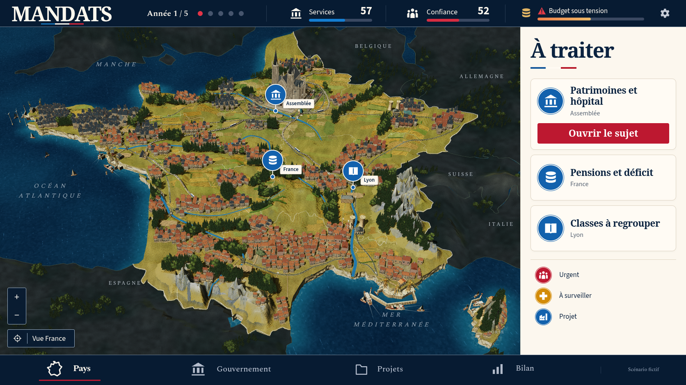
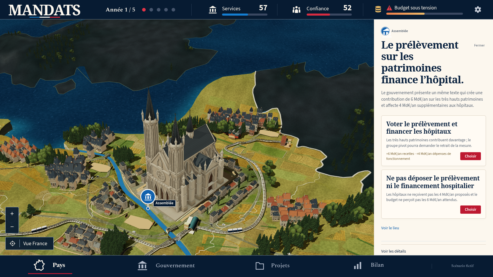
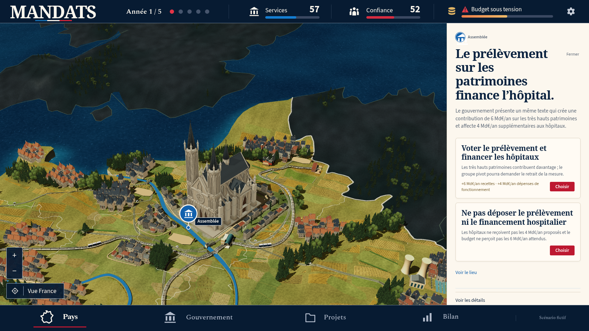
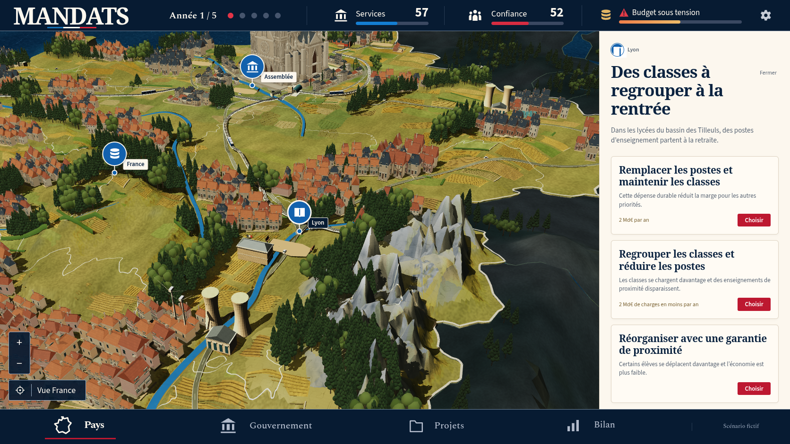

Passe 20 : non_conforme
La référence confirmée et le jeu réel
La passe 20 reste loin d'une reproduction à l'identique de la maquette. Paris a désormais une présence monumentale, les façades et les ombres ont progressé, et la campagne centrale a gagné quelques structures. La silhouette orientale et sud-orientale reste trop resserrée, les grandes plaines se lisent encore comme des surfaces peu épaisses, et les Alpes gardent des pointes et pans géométriques gris sur de larges bases jaunes. Le cadre de l'interface est proche, sans constituer une validation de la carte.
Chromium 151.0.7922.173, 1 672 × 941, DPR 1, polices chargées et mouvement réduit. Partie nationale v12, graine 0, ambition équilibre. Sept vues natives, aucune décision dépensée.
Relevé des sept vues · Build capturé · Verdict visuel. Erreurs JavaScript : 0 ; requêtes échouées : 0 ; réponses HTTP en échec : 0 ; avertissements console : 0 ; erreurs console : 0. Ces comptes portent sur les événements distincts du parcours.
Référence confirmée

Vue nationale réelle

Passe 20, vue nationale réelle. Paris, façades et ombres ont progressé. La carte reste trop plate et l'est trop resserré face à la maquette. Verdict artistique : non conforme.
2026-10-09 02:52:15.508 UTC
Conditions et actions · Entrées de partieInspections réelles
Paris


Inspection réelle de Paris. La cathédrale est détaillée et possède désormais une masse dominante. Le paysage alentour et les groupes bâtis restent plus réguliers et simplifiés que la référence.
Conditions et actions · Entrées de partieSeine et berges


Vue réelle de Paris avec recul. Les ombres font mieux lire les volumes et préservent davantage les façades que l'essai 19a. Les sols, cultures et berges restent très graphiques.
Conditions et actions · Entrées de partieLyon et Alpes


Inspection réelle des Alpes. Les entailles et crêtes sont présentes, mais les grands pans gris, les pointes et les bases jaunes restent artificiels. La fragmentation minérale et la neige de la référence ne sont pas reproduites.
Conditions et actions · Entrées de partieRetour national

Retour réel à la vue nationale. Les mêmes écarts de silhouette orientale, de relief général et de massifs restent visibles. Cette capture documente l'état de la passe 20, sans validation artistique.
Conditions et actions · Entrées de partieÉcarts observés
- Silhouette nationale : le bord est et la côte sud-est occupent moins de largeur que dans la référence. Sur les coupes horizontales y300, y350 et y650, le bord terrestre chaud visible se situe respectivement à x1139, x1094 et x1084 dans 20, contre x1195, x1162 et x1217 dans la référence. Les écarts de 56, 68 et 133 pixels restent présents. Ces coupes prouvent l'écart de silhouette mais ne sont pas des correspondances géographiques suffisantes pour calculer une déformation.
- Relief et composition de la campagne : les vallons, bosquets et talus ajoutés se voient localement, notamment dans la poche centrale x590-784 / y460-534. À l'échelle nationale, de grands espaces jaunes ou olive conservent cependant une lecture horizontale et diagrammatique. Les rangs de cultures et les alignements urbains restent plus réguliers que le réseau de champs, pentes, chemins et petits groupes bâtis de la référence. La couleur seule ne corrige pas ce manque d'épaisseur et de variété structurelle.
- Massifs : dans la vue Alpes, particulièrement x850-985 / y510-680, les crêtes sont plus découpées mais gardent une organisation en dents et grands pans gris plissés. Les nouvelles ruptures existent, mais les bases jaunes sont encore larges, les transitions de versants sont abruptes et la neige forme peu de caps ou bandes clairement distincts. La référence montre des contreforts et roches plus fragmentés, des creux profonds, des débris à plusieurs échelles et une séparation plus nette entre roche chaude, neige claire et ombres froides.
Groupes statiques : 36 · Instances statiques : 11954 · Maisons placées : 1258. Ces compteurs proviennent du JSON initial et ne mesurent pas la fidélité à la maquette.
Les sujets et solutions restent ceux de la partie exécutée. La revue artistique provient de /root/reference_review.